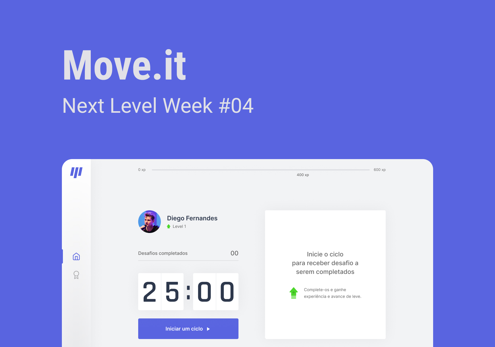
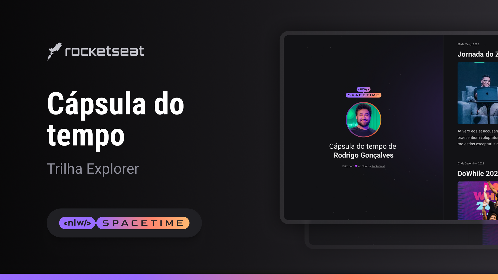

04 de Junho de 2023
Projeto Move.It (em desenvolvimento)

Durante minha terceira imersão em desenvolvimento, aprendi React, Next
JS e Typescript ao criar o Move.It. Um web app que combina a técnica
de Pomodoro com exercícios físicos para quem passa muito tempo no
computador. Desenvolvendo o projeto, adquiri habilidades em criação de
interfaces dinâmicas, gerenciamento de estados e uso de componentes
reutilizáveis, ampliando meu conhecimento em desenvolvimento web.
01 de Junho de 2023
Projeto Spacetime

Durante a imersão NLW Spacetime, da Rocketseat, tive a oportunidade de
aprimorar minhas habilidades no desenvolvimento web. Aprofundei meus
conhecimentos em HTML e CSS, aplicando técnicas avançadas para criar
uma página de cápsula do tempo. Nesse projeto, pude registrar meu
aprendizado em desenvolvimento ao longo do tempo, criando um espaço
para refletir sobre o meu crescimento e conquistas nessa jornada.
30 de Maio de 2023
Projeto Discover
Durante o curso Discover da Rocketseat, tive meu primeiro contato com
o desenvolvimento web, aprendendo HTML, CSS, JavaScript, Git e GitHub.
Desenvolvi o DevLinks, um agregador de links, aplicando os
conhecimentos adquiridos. A experiência me proporcionou habilidades em
resolução de problemas, trabalho em equipe, organização de código e
pesquisa autônoma, marcando meu início no desenvolvimento web.